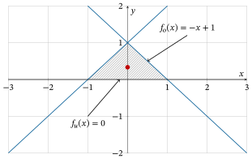

Übungen#
Übung 9.1
Berechnen Sie das Doppelintegral
Lösung
Lösungsweg
Übung 9.2
Berechnen Sie das Doppelintegral
Lösung
Lösungsweg
Übung 9.3
Berechnen Sie das Doppelintegral
Lösung
Lösungsweg
Übung 9.4
Berechnen Sie das Doppelintegral
Lösung
Lösungsweg
Übung 9.5
Berechnen Sie das Doppelintegral
Lösung
Lösungsweg
Nebenrechnung für den zweiten Integranden:
Eingesetzt in das obige Integral gilt dann zusammen mit dem Trick \(\sin^2(x) =\frac{1}{2}-\frac{1}{2}\cos(2x)\) (Additionstheorem bzw. Doppelwinkelfunktion)
Übung 9.6
Berechnen Sie den Schwerpunkt der Fläche eines Dreiecks mit den Koordinaten \((1,0)\), \((0,1)\) und \((-1,0)\). Machen Sie sich dazu eine Skizze des Integrationsgebietes.
Lösung
Schwerpunkt \(S(0, \frac{1}{3})\)
Lösungsweg
Zuerst fertigen wir eine Zeichnung an.

Die x-Koordinate des Schwerpunkts ist Null, weil das Dreieck symmetrisch zur y-Achse ist. Diese Symmetrie nutzen wir auch aus, um die y-Koordinate des Schwerpunkts zu berechnen. Anstatt das Integral von \(x=-1\) bis \(x=1\) zu berechnen und dabei zwei verschiedene Randfunktionen betrachten zu müssen, betrachten wir nur die rechte Hälfte des Dreiecks. Der Schwerpunkt der rechten Hälfte in y-Richtung muss gleich dem Schwerpunkt des gesamten Dreiecks in y-Richtung sein.
Die Formel zur Berechnung der y-Koordinate des Schwerpunkts lautet also
Zuerst berechnen wir \(A\) mit der Formel \(A = \frac{1}{2} g h\) mit der Grundseite \(g\) und der Höhe \(h\). Aus der Zeichnung lesen wir ab: \(g = 1\) und \(h=1\). Also ist der Flächeninhalt des rechten Dreiecks
Alternativ hätten wir auch den Flächeninhalt mit einem Doppelintegral berechnen können. Das innere Integral \(I(x)\) ist
Eingesetzt in das äußere Integral erhalten wir
Alles zusammengesetzt ist also die y-Koordinate des Schwerpunkts
Damit ist der Schwerpunkt des Dreiecks \(S(0, \frac{1}{3})\).
Übung 9.7
Berechnen Sie den Schwerpunkt der Fläche, die durch die beiden Kurven \(f(x)=x^2-4x-1\) und \(g(x)=2x-6\) eingeschlossen wird. Machen Sie sich dazu eine Skizze des Integrationsgebietes.
Lösung
Schwerpunkt \(S(3, -\frac{8}{5})\)
Lösungsweg
Zuerst fertigen wir eine Zeichnung an:

Als erstes werden die Schnittstellen berechnet:
Danach wird der Flächeninhalt \(A\) berechnet:
Als nächstes wird die x-Koordinate des Schwerpunkts berechnet:
Und nun noch die y-Koordinate des Schwerpunktes: